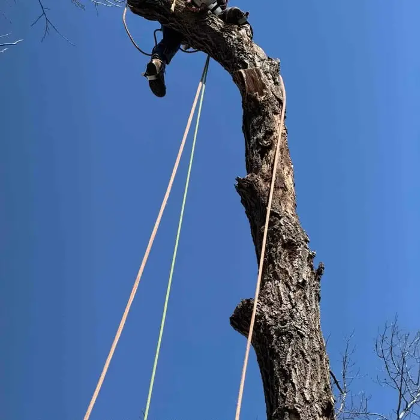

Tree Removal
Dead, leaning or unwanted trees taken down safely, with full cleanup.
Emerald ash borer kills ash trees, and dead ash get brittle fast. We remove infested trees safely, before they start dropping limbs on your house, car or family.
Emerald ash borer (EAB) is a small, metallic green beetle from Asia. Its larvae tunnel under the bark of ash trees and cut off the flow of water and nutrients. An infested tree usually dies within a few years. EAB is present across the Twin Cities metro, including Anoka County, and ash was widely planted in Blaine yards and boulevards for decades, so many homeowners here are dealing with it now.
The City of Blaine has its own emerald ash borer page with information on the city's program and on trees in the public right-of-way. If your ash is in the boulevard, check there first or ask us and we'll help you figure out who is responsible for it.
Not sure if your tree is even an ash? Ash trees have leaves made of several leaflets arranged in pairs, and branches that grow directly opposite each other. We can identify it for you during a free estimate.
Ash wood dries out and becomes brittle much faster than most trees once it dies. Within a year or two, dead branches can snap off without wind, and the whole tree can fail at the base. That makes a dead ash harder and riskier to remove the longer it stands. Climbers may not be able to safely tie into it, which can mean a lift or crane is needed, and the price goes up. Removing an ash early, while the wood is still sound, is usually safer and cheaper.

Treatment with trunk-injected insecticide can protect a healthy, valuable ash tree, but it has to be repeated every few years for the life of the tree, and it only works if the tree hasn't already lost much of its crown. As a rough guide:
Ash wood can carry EAB larvae, so be careful about moving it. Keep firewood local and follow current Minnesota Department of Agriculture guidance on ash wood.
When you replace an ash, choose a different species so you don't repeat the problem. Mixing species is the best protection against the next pest. Ask a local nursery about trees suited to Anoka County's sandy soils.
Look for a thinning crown, woodpecker damage that leaves light patches on the bark, vertical bark splits, small D-shaped holes and sprouts growing on the trunk. We can confirm during a free estimate.
Healthy ash trees can sometimes be protected with repeated insecticide treatments. Once a tree has lost a significant part of its crown, removal is usually the better option.
Dead ash becomes brittle quickly, so it is harder to climb safely. Very brittle trees may need a lift or crane, which adds cost. Removing ash early is usually cheaper.
Boulevard trees can fall under city rules. Check the City of Blaine emerald ash borer and boulevard tree pages, or ask us and we will help you find out.
Call or text for a free, no-obligation quote. We serve homeowners all across Blaine, MN.